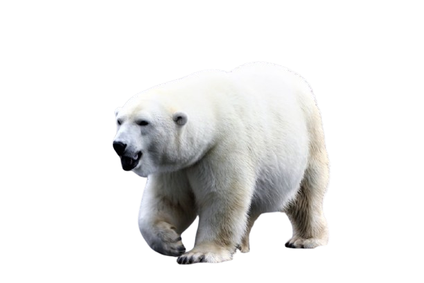
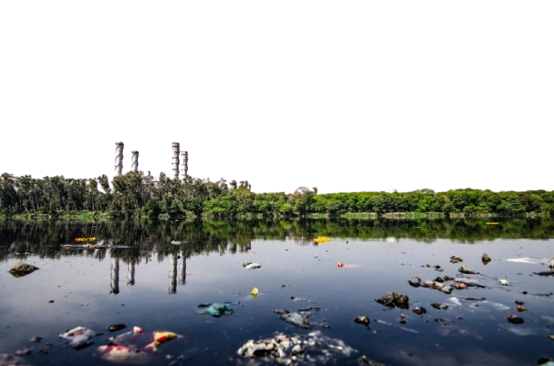
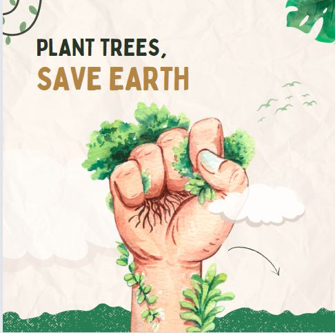

WHAT IS CLIMATE CHANGE?
Climate change refers to long-term shifts in temperatures and weather patterns, primarily caused by human activities like burning fossil fuels, deforestation, and industrial processes. These activities increase the concentration of greenhouse gases, such as carbon dioxide, in the Earth's atmosphere, trapping heat and causing the planet to warm. This warming leads to various environmental impacts, including rising sea levels, more frequent extreme weather events, and disruptions to ecosystems and biodiversity. Climate change poses significant risks to both natural environments and human societies.


WHAT DOES IT AFFECT?
Agriculture suffers as shifting weather patterns cause droughts, floods, and unpredictable growing seasons, leading to food shortages and economic instability. Climate change also exacerbates health problems, increasing the risk of heat-related illnesses, respiratory issues from pollution, and the spread of diseases like malaria and dengue fever. Vulnerable communities, especially in developing nations, bear the brunt of these impacts, facing displacement and loss of livelihoods. Without global action, the environmental, social, and economic consequences of climate change will continue to worsen.
WHY IS IT A PROBLEM?
Climate change is a problem because it destabilizes the planet’s climate systems, which are essential for maintaining a balanced environment. The increase in global temperatures disrupts natural processes that regulate weather, water cycles, and ecosystems. This leads to imbalances that strain resources like food, water, and energy, making them less reliable and accessible. It also undermines economic stability, as industries dependent on consistent environmental conditions, such as agriculture and infrastructure, become more vulnerable to disruptions.

